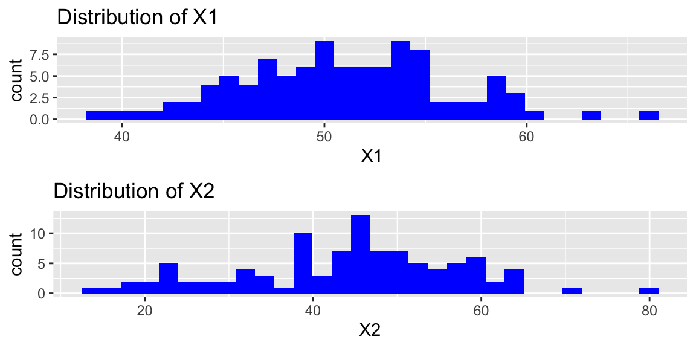
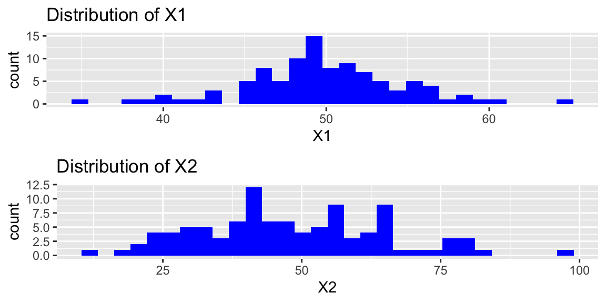

Chapter 1 Review of Multiple Linear Regression
Chapter 1 Learning Outcomes
Identify violations of linear least squares regression (LLSR) assumptions based on descriptions of data collection.
Interpret parameter estimates in LLSR models, including models with transformations and/or interactions.
Calculate expected responses and expected changes associated with explanatory variables in a LLSR model.
Calculate standard errors, t-statistics, residual standard error, \(R^2\), and F-statistics in a LLSR model’s R output.
Interpret standard errors, t-statistics, residual standard error, \(R^2\), and F-statistics in a LLSR model’s R output.
Analyze data using linear least squares regression in R.
This chapter provides an outline of Sections 1.4-1.7 of Beyond Multiple Linear Regression by Roback and Legler. Much of the text is either directly from the book, or lightly modified/summarized. Most of the code originates from the book’s Github repository.
knitr::opts_chunk$set(echo = TRUE, message=FALSE, warning=FALSE, fig.height = 3, fig.width = 6)
# Packages required for Chapter 1
library(knitr)
library(gridExtra)
library(GGally)
library(kableExtra)
library(jtools)
library(rsample)
library(broom)
library(tidyverse)
library(ggformula)1.1 Exploratory Data Analysis
1.1.1 Kentucky Derby Data
We use data from the Kentucky Derby, a 1.25 mile race run annually at Churchill Downs race track in Louisville, Kentucky.
Our data set derbyplus.csv contains data from 1896-2017, and includes the following variables:
yearof the race,
- winning horse (
winner),
conditionof the track (fast, good, slow) ,
- average
speed(in feet per second) of the winner,
- number of
starters(horses who raced)
We would like to use least squares linear regression techniques to model the speed of the winning horse as a function of track condition, field size, and trends over time.
Sample and Population
Statistics are often used to generalize conclusions from a sample to a larger population. In this scenario, it’s not immediately clear what a larger population of interest might be. The Kentucky Derby is run only once each year, and we have results for all years between 1896 and 2017. We could imagine, however, that even if the same horses were to run the race multiple times, even under the same track conditions, their times might vary from one race to the next. Thus, we can think of the larger population as being all races that might have been run with the same horses, under similar conditions.
derby.df <- read.csv("https://raw.githubusercontent.com/proback/BeyondMLR/master/data/derbyplus.csv")
head(derby.df)## year winner condition speed starters
## 1 1896 Ben Brush good 51.66 8
## 2 1897 Typhoon II slow 49.81 6
## 3 1898 Plaudit good 51.16 4
## 4 1899 Manuel fast 50.00 5
## 5 1900 Lieut. Gibson fast 52.28 7
## 6 1901 His Eminence fast 51.66 51.1.2 Some Data Wrangling
We modify the data to create:
* indicator (0-1) variables for whether the track was in fast or good condition
* a factor variable (fastfactor) telling whether or not the track was fast
* a variable giving years since 1896 (yearnew)
derby.df <- derby.df %>%
mutate( fast = ifelse(condition=="fast",1,0),
good = ifelse(condition=="good",1,0),
yearnew = year - 1896,
fastfactor = ifelse(fast == 0, "not fast", "fast"))
table1 <- derby.df %>%
filter(row_number() < 6 | row_number() > 117)
kable(table1, booktabs=T,caption="The first five and the last five observations from the Kentucky Derby case study.") %>%
kable_styling(latex_options = "scale_down")| year | winner | condition | speed | starters | fast | good | yearnew | fastfactor |
|---|---|---|---|---|---|---|---|---|
| 1896 | Ben Brush | good | 51.66 | 8 | 0 | 1 | 0 | not fast |
| 1897 | Typhoon II | slow | 49.81 | 6 | 0 | 0 | 1 | not fast |
| 1898 | Plaudit | good | 51.16 | 4 | 0 | 1 | 2 | not fast |
| 1899 | Manuel | fast | 50.00 | 5 | 1 | 0 | 3 | fast |
| 1900 | Lieut. Gibson | fast | 52.28 | 7 | 1 | 0 | 4 | fast |
| 2013 | Orb | slow | 53.71 | 19 | 0 | 0 | 117 | not fast |
| 2014 | California Chrome | fast | 53.37 | 19 | 1 | 0 | 118 | fast |
| 2015 | American Pharoah | fast | 53.65 | 18 | 1 | 0 | 119 | fast |
| 2016 | Nyquist | fast | 54.41 | 20 | 1 | 0 | 120 | fast |
| 2017 | Always Dreaming | fast | 53.40 | 20 | 1 | 0 | 121 | fast |
1.1.3 Univariate Graphical Summaries
Distributions of winning speeds and number of starters
# EDA graphs
speed_hist <- ggplot(data = derby.df, aes(x = speed)) +
geom_histogram(binwidth = 0.5, fill = "white",
color = "black") +
xlab("Winning speed (ft/s)") + ylab("Frequency") + labs(title="(a)")
starters_hist <- ggplot(data = derby.df, aes(x = starters)) +
geom_histogram(binwidth = 3, fill = "white",
color = "black") +
xlab("Number of starters") + ylab("Frequency") + labs(title="(b)")
grid.arrange(speed_hist, starters_hist, ncol = 2)Figure 1.1: Histograms of key continuous variables. Plot (a) shows winning speeds, while plot (b) shows the number of starters.
1.1.4 Bivariate Graphical Summaries
The ggpairs function creates a scatterplot matrix displaying relationships between all pairs of variables.

Figure 1.2: Relationships between pairs of variables in the Kentucky Derby data set.
- We see evidence of higher speeds on fast tracks and also a tendency for recent years to have more fast conditions.
We examine how winning speeds have changed over time, when the track is fast and when it is not fast.
# Coded scatterplot
ggplot(derby.df, aes(x = year, y = speed, colour = fastfactor)) +
geom_point(aes(shape = fastfactor)) +
geom_smooth(aes(linetype = fastfactor), method = lm, se = FALSE)
Figure 1.3: Linear trends in winning speeds over time, presented separately for fast conditions vs. good or slow conditions.
- It appears that winning speeds have increased more rapidly for tracks that are not fast. This suggests an interaction between year and track condition, since the relationship between speed and year appears to differ depending on whether or not the track was fast.
1.2 Simple Linear Regression Model
1.2.1 Model for Winning Time and Year
We begin with a simple linear regression model for winning speed (\(Y\)), using year since 1896 as the explanatory variable. This model has the form:
\[\begin{equation} Y_{i}=\beta_{0}+\beta_{1}\textrm{Yearnew}_{i}+\epsilon_{i} \quad \textrm{where} \quad \epsilon_{i}\sim \textrm{N}(0,\sigma^2). \end{equation}\]
We obtain estimates of \(\beta_0\) and \(\beta_1\), denoted (\(\hat{\beta_0}\) and \(\hat{\beta_1}\)) by minimizing the sum of squared residuals \(SSR=\displaystyle\sum_{i=1}^{n}\left(Y_i- (\beta_{0}+\beta_{1}\textrm{Yearnew}_{i})\right)^2.\)
1.2.2 First Model R Output
We fit the model in R.
Call:
lm(formula = speed ~ yearnew, data = derby.df)
Residuals:
Min 1Q Median 3Q Max
-3.08190 -0.50026 0.07387 0.67367 1.68720
Coefficients:
Estimate Std. Error t value Pr(>|t|)
(Intercept) 51.588393 0.162549 317.37 <2e-16 ***
yearnew 0.026126 0.002322 11.25 <2e-16 ***
---
Signif. codes: 0 '***' 0.001 '**' 0.01 '*' 0.05 '.' 0.1 ' ' 1
Residual standard error: 0.9032 on 120 degrees of freedom
Multiple R-squared: 0.5134, Adjusted R-squared: 0.5093
F-statistic: 126.6 on 1 and 120 DF, p-value: < 2.2e-16Interpretations:
- The expected winning speed in 1896 is 51.59 ft/s.
- Winning speed is expected to increase by 0.026 ft./s on average for each year since 1896. The low p-value provides evidence that average winning speed has increased over time.
- 51% of the total variability in winning speed is explained by the simple linear regression model with year since 1896 as the explanatory variable.
- We estimate that the error standard deviation \(\sigma\) is 0.90. This represents the average deviation between the actual winning speed in a given year and the model’s predicted winning speed. If there were multiple races run in the same year, this could be interpreted as the variability in winning speeds between different races run in the same year.
1.2.3 Calculations in SLR
The summary command for a linear model in R displays a table with 4 columns.
Estimate gives the least-squares estimates \(b_0, b_1, \ldots, b_p\)
Standard Error gives estimates of the standard deviation in the sampling distribution for estimate. It tells us how the estimate is expected to vary between different samples of the given size. Standard error formulas are given in the table below.
t value is the estimate divided by its standard error.
Pr(>|t|) is a p-value for the hypothesis test associated with the null hypothesis \(\beta_j = 0\), where \(\beta_j\) is the regression coefficient pertaining to the given line. Note that \(\beta_j\) is the unknown population parameter estimated by \(b_j\).
The Residual Standard Error is \(s =\sqrt{\frac{\text{SSR}}{n-(p+1)}} = \sqrt{\frac{\displaystyle\sum_{i=1}^n(y_i-\hat{y}_i)^2}{(n-(p+1))}}\). This is an estimate of \(\sigma\), which represents the standard deviation in the distribution of the response variable for given value(s) or category(ies) of explanatory variable(s). It tells us how much variability is expected in the response variable between different individuals with the same values/categories of the explanatory variables.
The degrees of freedom are \(n-(p+1)\).
The Multiple R-Squared value is the \(R^2\) value seen in Chapter 2. \(R^2 = \frac{\text{SST} -\text{SSR}}{\text{SST}} = \frac{\displaystyle\sum_{i=1}^n(y_i-\hat{y}_i)^2}{\displaystyle\sum_{i=1}^n(y_i-\bar{y}_i)^2}\)
We know that \(R^2\) can never decrease when additional variables are added to a model. The Adjusted-R^2 value is an alternate version of \(R^2\) that is designed to penalize adding variables that do little to explain variation in the response.
The F-statistic on the bottom line of the R-output corresponds to an F-test of the given model against a reduced model that include no explanatory variables. The p-value on this line is associated with the test of the null hypothesis that there is no relationship between the response variable and any of the explanatory variables. Since SSR for this reduced model is equal to SST, the F-statistic calculation simplifies to:
\[ F=\frac{\frac{SST - SSR}{p}}{\frac{SSR}{n-(p+1)}} \]
The degrees of freedom associated with the F-statistic are given by \(p\) and \((n-(p+1))\).
Standard Error Formulas
| Scenario | Standard Error |
|---|---|
| Single Mean | \(SE(b_0)=\frac{s}{\sqrt{n}}\) |
| Difference in Means | \(SE(b_j)=s\sqrt{\frac{1}{n_1}+\frac{1}{n_2}}\) |
| Single Proportion | \(SE(\hat{p}) = \sqrt{\frac{\hat{p}(1-\hat{p})}{n}}\) |
| Difference in Proportions | \(SE(\hat{p}) = \sqrt{\left(\frac{\hat{p_1}(1-\hat{p}_1)}{n_1}+\frac{\hat{p_2}(1-\hat{p_2})}{n_2}\right)}\) |
| Intercept in Simple Linear Regression | \(SE(b_0)=s\sqrt{\frac{1}{n}+\frac{\bar{x}^2}{\sum(x_i-\bar{x})^2}}\) |
| Slope in Simple Linear Regression | \(SE(b_1)=\sqrt{\frac{s^2}{\sum(x_i-\bar{x})^2}}=\sqrt{\frac{1}{n-2}\frac{{\sum(\hat{y}_i-y_i)^2}}{\sum(x_i-\bar{x})^2}}\) |
\(s=\sqrt{\frac{\displaystyle\sum_{i=1}^n(y_i-\hat{y}_i)^2}{(n-(p+1))}}\), (p is number of regression coefficients not including \(b_0\)) is sample standard deviation. Note that in the one-sample case, this simplifies to the standard deviation formula we’ve seen previously.
In the 2nd formula, the standard error estimate \(s\sqrt{\frac{1}{n_1+n_2}}\) is called a “pooled” estimate since it combines information from all groups. When there is reason to believe standard deviation differs between groups, we often use an “unpooled” standard error estimate of \(\sqrt{\frac{s_1^2}{n_1}+\frac{s_2^2}{n_2}}\), where \(s_1, s_2\) represent the standard deviation for groups 1 and 2.
Variability Sums of Squares
- the total variability in the response variable is the sum of the squared differences between the observed values and the overall average.
\[\text{Total Variability in Response Var.}= \text{SST} =\displaystyle\sum_{i=1}^n(y_i-\bar{y})^2\]
- the variability remaining unexplained even after accounting for explanatory variable(s) in a model is given by the sum of squared residuals. We abbreviate this SSR, for sum of squared residuals.
\[ \text{SSR} = \text{Variability Remaining}=\displaystyle\sum_{i=1}^n(y_i-\hat{y}_i)^2 \]
- the variability explained by the model, abbreviated SSM, is given by
\[ \text{SSM} = \text{SST} - \text{SSR} \]
- The coefficient of determination (abbreviated \(R^2\)) is defined as
\[R^2=\frac{\text{Variability Explained by Model}}{\text{Total Variability}}=\frac{\text{SSM}}{\text{SST}} =\frac{\displaystyle\sum_{i=1}^n(\hat{y}_i-\bar{y})^2}{\displaystyle\sum_{i=1}^n(y_i-\bar{y})^2}\]
Note that some texts use different abbreviations than the ones used here. When working with resources outside this class, be sure to carefully check the notation being used.
The estimated regression equation is
\[ \text{Speed} = 51.59 - 0.026 \times\text{YearNew}, \text{where } \epsilon_i\sim\mathcal{N}(0, \sigma) \]
- SSR is:
## [1] 97.8993- SST is:
## [1] 201.1791- The residual standard error \(s\) is our estimate of \(\sigma\), the standard deviation in winning speeds among races run in the same year.
\[ s =\sqrt{\frac{\text{SSR}}{n-(p+1)}} = \sqrt{\frac{\text{SSR}}{n-(p+1)}} = \sqrt{\frac{97.8993}{122-(1+1)}}=0.9032 \]
The degrees of freedom associated with this estimate is \(122-(1+1) = 120\).
- The Multiple R-Squared is:
\[ R^2 = \frac{201.1791 - 97.8993}{201.1791} = 0.5134 \]
- The F-statistic is
\[ F=\frac{\frac{SST - SSR}{p}}{\frac{SSR}{n-(p+1)}} = \frac{\frac{201.1791 - 97.8993}{1}}{\frac{97.8993}{122-(1+1)}} = 126.6 \]
This F-statistic is associated with 1 and 120 degrees of freedom.
To obtain the standard error estimates for \(b_0\) and \(b_1\), we need to calculate \(\bar{x}\) and \(\sum(x_i-\bar{x})^2\), where \(x\) represents the explanatory variable, \(\text{YearNew}\).
## [1] 60.5## [1] 151310.5\[ SE(b_0)=s\sqrt{\frac{1}{n}+\frac{\bar{x}^2}{\sum(x_i-\bar{x})^2}} = 0.9032317\sqrt{\frac{1}{122} + \frac{60.5^2}{151310.5} } = 0.1625 \]
\(SE(b_0)\) represents the variability in expected winning speed in 1896, between different samples of 122 races that might have been run by these horses under similar conditions.
\[ SE(b_1)=\sqrt{\frac{s^2}{\sum(x_i-\bar{x})^2}}=\sqrt{\frac{0.9032^2}{151310.5}} = 0.0023219 \]
\(SE(b_1)\) represents the variability in rate of change in winning speed per year, between different samples of 122 races that might have been run by these horses under similar conditions.
Hypothesis Test for Intercept Line
Null Hypothesis: The average winning speed among all races that might have been run by these horses, under similar conditions, in 1896 is 0. (\(\beta_0=0\)).
Alternative Hypothesis: The average winning speed among all races that might have been run by these horses, under similar conditions, in 1896 is not 0. (\(\beta_0 \neq 0\)).
Obviously, a horse that wins a race will not have a running speed of 0, so this is not a sensible hypothesis test.
Hypothesis Test for pH Line
Null Hypothesis: There is no relationship between year and average winning speed, i.e., average winning speed does not change over time among all races that might have been run by these horses under similar conditions. (\(\beta_1=0\)).
Alternative Hypothesis: There is a relationship between year and average winning speed, i.e., average winning speed does change over time among all races that might have been run by these horses under similar conditions. (\(\beta_1 \neq 0\)).
Test Statistic: \(t=\frac{{b_j}}{\text{SE}(b_j)} = \frac{-0.02612601}{0.002322013} = 11.25\)
ts=11.25145
gf_dist("t", df=120, geom = "area", fill = ~ (abs(x)> abs(ts)), show.legend=FALSE) + geom_vline(xintercept=c(ts, -ts), color="red") + xlab("t")## [1] 1.716807e-20The tiny p-value provides strong evidence of a relationship between year and winning speed. Kentucky Derby winners do indeed appear to be getting faster over time.
1.2.4 Checking Model Assumptions

Figure 1.4: Residual plots for Model 2.
The residual plots help tell us what trends/relationships our model is missing, or leaving unexplained.
- The upper left plot, Residuals vs. Fitted, can be used to check the Linearity assumption. Residuals should be patternless around Y = 0; if not, there is a pattern in the data that is currently unaccounted for.
- The upper right plot, Normal Q-Q, can be used to check the Normality assumption. Deviations from a straight line indicate that the distribution of residuals does not conform to a theoretical normal curve.
- The lower left plot, Scale-Location, can be used to check the Equal Variance assumption. Positive or negative trends across the fitted values indicate variability that is not constant.
- The lower right plot, Residuals vs. Leverage, can be used to check for influential points. Points with high leverage (having unusual values of the predictors) and/or high absolute residuals can have an undue influence on estimates of model parameters.
There is typically no residual plot to evaluate the Independence assumption. Evidence for lack of independence comes from knowing about the study design and methods of data collection. In this case, with a new field of horses each year, the assumption of independence is pretty reasonable.
In this case, the Residuals vs. Fitted plot indicates that a quadratic fit might be better than the linear fit of Model 2; other assumptions look reasonable.
1.2.5 Quadratic Term for Year
Let’s add a quadratic term to the model
\[\begin{equation*} Y_{i}=\beta_{0}+\beta_{1}\textrm{Yearnew}_{i}+\beta_{2}\textrm{Yearnew}^2_{i}+\epsilon_{i}\quad \textrm{where}\quad \epsilon_{i}\sim \textrm{N}(0,\sigma^2). \end{equation*}\]
1.2.6 Quadratic Model in R
derby.df <- mutate(derby.df, yearnew2 = yearnew^2)
model2q <- lm(speed ~ yearnew + yearnew2, data = derby.df)## Estimate Std. Error t value Pr(>|t|)
## (Intercept) 50.5874565658 2.081705e-01 243.009695 2.615174e-162
## yearnew 0.0761728163 7.950413e-03 9.580989 1.838874e-16
## yearnew2 -0.0004136099 6.358703e-05 -6.504628 1.920684e-09cat(" R squared = ", summary(model2q)$r.squared, "\n",
"Residual standard error = ", summary(model2q)$sigma)## R squared = 0.6410103
## Residual standard error = 0.7790385# Fitted models for Model 2 and Model 2Q
ggplot(derby.df, aes(x = year, y = speed)) +
geom_point() +
stat_smooth(method = "lm", formula = y ~ x,
se = FALSE, linetype = 1) +
stat_smooth(method = "lm", formula = y ~ x + I(x^2),
se = FALSE, linetype = 2)
Figure 1.5: Linear (solid) vs. quadratic (dashed) fit.
- This model suggests that the rate of increase in winning speeds is slowing down over time.
- The low p-value on the quadratic term provides evidence that there is indeed a quadratic relationship between speed and year (as opposed to a linear one). Furthermore, the proportion of variation in winning speeds explained by the model has increased from 51.3% to 64.1%.
1.3 Multiple Linear Regression with Two Predictors
1.3.1 Model with Year and Fast Track
We add an indicator variable for whether or not the track is fast in our model.
Note that the text writes an indicator using the name of the 0-1 categorical variable, as opposed to the \(\text{I}_{\text{Fast}}\) notation I used in STAT 255.
\[ \begin{equation} Y_{i}=\beta_{0}+\beta_{1}\textrm{Yearnew}_{i}+\beta_{2}\textrm{Fast}_{i}+\epsilon_{i}\quad \textrm{where}\quad \epsilon_{i}\sim \textrm{N}(0,\sigma^2). \end{equation} \]
1.3.2 Multiple Regression Model in R
## Estimate Std. Error t value Pr(>|t|)
## (Intercept) 50.91782155 0.154601703 329.348388 5.360308e-178
## yearnew 0.02258276 0.001918849 11.768907 1.116763e-21
## fast 1.22684588 0.150721259 8.139833 4.393084e-13cat(" R squared = ", summary(model4)$r.squared, "\n",
"Residual standard error = ", summary(model4)$sigma)## R squared = 0.6874141
## Residual standard error = 0.7269468Interpretations:
- winning speeds are, on average, 1.23 ft/s faster under fast conditions after accounting for time trends (i.e. assuming year is held constant). The low p-value provides evidence that winning speeds increase over time, after accounting for track condition.
- winning speeds are expected to increase by 0.023 ft/s per year, after accounting for track condition. The low p-value provides evidence that winning speeds are faster when the track is in fast condition, after accounting for year.
This yearly effect is also smaller than the 0.026 ft/s per year we estimated the previous model, that did not account for track condition. The single-variable model appears to have slightly overestimated the average increase in speed. This is probably because track conditions have also improved over time (due to improvements in track maintenence). The single variable model cannot distinguish between improvements in track conditions and improvements in speed of the horses. The multiple regression model can estimate these effects separately.
- Based on the \(R^2\) value, Model 4 explains 68.7% of the year-to-year variability in winning speeds, a noticeable increase over using either explanatory variable alone.
1.3.3 Confidence Intervals from MLR Model
Confidence Intervals for \(\beta_0, \beta_1, \beta_2\).
Under LINE assumptions, a confidence interval for \(\beta_j\) is given by \(\hat{\beta_j} \pm t_{(n-p), (1-\alpha/2)}^* \text{SE}(\beta_j)\),
where \(t_{(n-p), (1-\alpha/2)}^*\) represents the \((1-\alpha/2)\) quantile of a t-distribution with \(n-p\) degrees of freedom, \(\alpha\) represents the level of significance (e.g. 0.05 for a 95% CI), and \(p\) represents the number of parameters \(\beta_0, \beta_1, \ldots...\)
## 2.5 % 97.5 %
## (Intercept) 50.61169473 51.22394836
## yearnew 0.01878324 0.02638227
## fast 0.92840273 1.52528902Interpretations:
- We can be 95% confident that average winning speeds increase between 0.019 and 0.026 ft/s each year, after accounting for track condition.
- We can be 95% confident that average winning speeds under fast conditions are between 0.93 and 1.53 ft/s higher than under non-fast conditions, after accounting for the effect of year.
To make a prediction for a new case, such as the winning speed in 2017, we use a prediction interval:
new.data <- data.frame(yearnew = 2017 - 1896, fast = 1)
predict(model4, new = new.data, interval = "prediction") fit lwr upr
1 54.87718 53.4143 56.34006Based on our model, we can be 95% confident that the winning speed in 2017 under fast conditions will be between 53.4 and 56.3 ft/s. Note that Always Dreaming’s actual winning speed (53.40) barely fit within this interval—the 2017 winning speed was a borderline outlier on the slow side.
If we wanted to estimate the average value of Y among all cases with the given explanatory variable values, we would use
interval="confidence". This doesn’t really make sense in this context, since there is only one winning speed each year.
1.3.4 Slopes for Fast, non-Fast Tracks
In model4, we assume that the expected rate of change in winning speed over time is the same, regardless of whether the track is fast or not. In either case, it is given by \(\beta_1\).
Thus, Model 4 produces a picture that looks like this:
equation1 <- function(x){coef(model4)[2]*x+coef(model4)[1]}
equation2 <- function(x){coef(model4)[2]*x+coef(model4)[1]+coef(model4)[3]}
ggplot(data=derby.df, aes(x=yearnew, y=speed, color=fastfactor)) + geom_point()+
stat_function(fun=equation1,geom="line",color=scales::hue_pal()(3)[3]) +
stat_function(fun=equation2,geom="line",color=scales::hue_pal()(3)[1]) Recall, however, that the data suggested that speeds have increased more rapidly for tracks that are not fast.
# Coded scatterplot
ggplot(derby.df, aes(x = year, y = speed, colour = fastfactor)) +
geom_point(aes(shape = fastfactor)) +
geom_smooth(aes(linetype = fastfactor), method = lm, se = FALSE)
Figure 1.7: Linear trends in winning speeds over time, presented separately for fast conditions vs. good or slow conditions.
1.3.5 MLR Model with Interaction
We want to build a model allows winning speeds to increase at different rates for fast tracks than for those that are not fast. (i.e. a model that includes an interaction between fast and yearnew)
Thus, consider Model 5:
\[ \begin{equation*} \begin{split} Y_{i}&= \beta_{0}+\beta_{1}\textrm{Yearnew}_{i}+\beta_{2}\textrm{Fast}_{i} \\ &{}+\beta_{3}\textrm{Yearnew}_{i}\times\textrm{Fast}_{i}+\epsilon_{i}\quad \textrm{where}\quad \epsilon_{i}\sim \textrm{N}(0,\sigma^2) \end{split} \end{equation*} \] ### Interaction Model Estimates
LLSR provides the following parameter estimates:
We can do this using either of the following commands
model5 <- lm(speed ~ yearnew + fast + yearnew:fast, data=derby.df)
model5 <- lm(speed ~ yearnew*fast, data=derby.df)## Estimate Std. Error t value Pr(>|t|)
## (Intercept) 50.52862926 0.205072338 246.394174 6.988530e-162
## yearnew 0.03075099 0.003470967 8.859489 9.838736e-15
## fast 1.83352259 0.262174513 6.993520 1.729697e-10
## yearnew:fast -0.01149034 0.004116733 -2.791129 6.127912e-03cat(" R squared = ", summary(model5)$r.squared, "\n",
"Residual standard error = ", summary(model5)$sigma)## R squared = 0.7067731
## Residual standard error = 0.70705361.3.6 Model Equations for Fast, Non-Fast Tracks
According to our model, estimated winning speeds can be found by:
\[ \begin{equation} \hat{Y}_{i}=50.53+0.031\textrm{Yearnew}_{i}+1.83\textrm{Fast}_{i}-0.011\textrm{Yearnew}_{i}\times\textrm{Fast}_{i}. \end{equation} \]
\[ \begin{align*} \textrm{Fast}=0: & \\ \hat{Y}_{i} &= 50.53+0.031\textrm{Yearnew}_{i} \\ \textrm{Fast}=1: & \\ \hat{Y}_{i} &= (50.53+1.83)+(0.031-0.011)\textrm{Yearnew}_{i} \end{align*} \]
Interpretations
- \(\hat{\beta}_{0} = 50.53\). The expected winning speed in 1896 under non-fast conditions was 50.53 ft/s.
- \(\hat{\beta}_{1} = 0.031\). The expected yearly increase in winning speeds under non-fast conditions is 0.031 ft/s.
- \(\hat{\beta}_{2} = 1.83\). The winning speed in 1896 was expected to be 1.83 ft/s faster under fast conditions compared to non-fast conditions.
- \(\hat{\beta}_{3} = -0.011\). The expected yearly increase in winning speeds under fast conditions is 0.020 ft/s, compared to 0.031 ft/s under non-fast conditions, a difference of 0.011 ft/s.
1.4 Building a Multiple Linear Regression Model
1.4.1 Model Building Considerations
We now add additional variables, with the goal of building a final model that provides insight into relationships between winning speed and other variables.
There is no single correct model, but a good model will have the following characteristics:
- explanatory variables allow one to address primary research questions
- explanatory variables control for important covariates
- potential interactions have been investigated
- variables are centered where interpretations can be enhanced (e.g. subtract 1896 from year)
- unnecessary terms have been removed
- LINE assumptions and the presence of influential points have both been checked using residual plots
- the model tells a “persuasive story parsimoniously”
Most good models should lead to similar conclusions.
1.4.2 Model Diagnostics
Several tests and measures of model performance can be used when comparing different models for model building:
- \(R^2\). Measures the variability in the response variable explained by the model. One problem is that \(R^2\) always increases with extra predictors, even if the predictors add very little information.
- adjusted \(R^2\). Adds a penalty for model complexity to \(R^2\) so that any increase in performance must outweigh the cost of additional complexity. We should ideally favor any model with higher adjusted \(R^2\), regardless of size, but the penalty for model complexity (additional terms) is fairly ad-hoc.
- AIC (Akaike Information Criterion). Again attempts to balance model performance with model complexity, with smaller AIC levels being preferable, regardless of model size. The BIC (Bayesian Information Criterion) is similar to the AIC, but with a greater penalty for additional model terms.
- extra sum of squares F test. This is a generalization of the t-test for individual model coefficients which can be used to perform significance tests on nested models, where one model is a reduced version of the other.
1.4.3 Three Possible Models
We’ll consider three possible final models:
Model A:
\[ \begin{equation} \begin{split} Y_{i}&=\beta_{0}+\beta_{1}\textrm{Yearnew}_{i}+\beta_{2}\textrm{Yearnew}^2_{i}+\epsilon_{i}\quad \textrm{where}\quad \epsilon_{i}\sim \textrm{N}(0,\sigma^2) \end{split} \end{equation} \]
Model B:
\[ \begin{equation} \begin{split} Y_{i}&=\beta_{0}+\beta_{1}\textrm{Yearnew}_{i}+\beta_{2}\textrm{Yearnew}^2_{i}+\beta_{3}\textrm{Fast}_{i}\\ &{}+\beta_{4}\textrm{Good}_{i}+\beta_{5}\textrm{Starters}_{i}+\epsilon_{i}\quad \textrm{where}\quad \epsilon_{i}\sim \textrm{N}(0,\sigma^2) \end{split} \end{equation} \]
Note that this is equivalent to including the original track condition variable in a model. In this case, slow track is treated as the baseline variable, since we left the indicator for slow out of the model.
Model C:
\[ \begin{equation} \begin{split} Y_{i}&=\beta_{0}+\beta_{1}\textrm{Yearnew}_{i}+\beta_{2}\textrm{Yearnew}^2_{i}+\beta_{3}\textrm{Fast}_{i}\\ &{}+\beta_{4}\textrm{Good}_{i}+\beta_{5}\textrm{Starters}_{i} \\ & + \beta_6\textrm{Yearnew}_{i}\textrm{Fast}_{i}+ \beta_7\textrm{Yearnew}_{i}\textrm{Good}_{i} \\ & + \beta_8\textrm{Yearnew}^2_{i}\textrm{Fast}_{i}+ \beta_9\textrm{Yearnew}^2_{i}\textrm{Good}_{i} \\ & + \epsilon_{i}\quad \textrm{where}\quad \epsilon_{i}\sim \textrm{N}(0,\sigma^2) \end{split} \end{equation} \]
1.4.5 Model 0A Output
## Estimate Std. Error t value Pr(>|t|)
## (Intercept) 50.587457 0.208171 243.009695 0
## yearnew 0.076173 0.007950 9.580989 0
## yearnew2 -0.000414 0.000064 -6.504628 0cat(" R squared = ", summary(model0A)$r.squared, "\n",
" Adjusted R squared = ", summary(model0A)$adj.r.squared, "\n",
"Residual standard error = ", summary(model0A)$sigma, "\n",
"AIC = ", AIC(model0A))## R squared = 0.6410103
## Adjusted R squared = 0.6349769
## Residual standard error = 0.7790385
## AIC = 290.2581.4.6 Model 0B Output
## Estimate Std. Error t value Pr(>|t|)
## (Intercept) 50.020315 0.194646 256.980337 0.000000
## yearnew 0.070034 0.006130 11.423908 0.000000
## yearnew2 -0.000370 0.000046 -8.041141 0.000000
## fast 1.392666 0.130520 10.670102 0.000000
## good 0.915698 0.207677 4.409248 0.000023
## starters -0.025284 0.013602 -1.858827 0.065586cat(" R squared = ", summary(model0B)$r.squared, "\n",
" Adjusted R squared = ", summary(model0B)$adj.r.squared, "\n",
"Residual standard error = ", summary(model0B)$sigma,"\n",
"AIC = ", AIC(model0B))## R squared = 0.8266716
## Adjusted R squared = 0.8192006
## Residual standard error = 0.5482735
## AIC = 207.42911.4.7 Model 0C Output
## Estimate Std. Error t value Pr(>|t|)
## (Intercept) 49.703525 0.296614 167.569982 0.000000
## yearnew 0.068568 0.013167 5.207395 0.000001
## yearnew2 -0.000290 0.000102 -2.835528 0.005430
## fast 1.697589 0.337378 5.031710 0.000002
## good 1.704844 0.468469 3.639181 0.000415
## starters -0.018592 0.013107 -1.418444 0.158838
## yearnew:fast 0.004223 0.014398 0.293292 0.769841
## yearnew:good -0.031672 0.021548 -1.469858 0.144404
## yearnew2:fast -0.000128 0.000114 -1.124264 0.263305
## yearnew2:good 0.000249 0.000213 1.168083 0.245254cat(" R squared = ", summary(model0C)$r.squared, "\n",
" Adjusted R squared = ", summary(model0C)$adj.r.squared, "\n",
"Residual standard error = ", summary(model0C)$sigma, "\n",
"AIC = ", AIC(model0C))## R squared = 0.8498007
## Adjusted R squared = 0.8377311
## Residual standard error = 0.5194172
## AIC = 197.95561.4.8 Goodness of Fit Tests
When two models are nested (that is, all the terms in the smaller model also appear in the larger model) we can compare them using a goodness of fit test.
Reduced Model: \(\hat{y}_i = b_0 + b_1x_{i1} + b_2{x_i2} + \ldots + b_{q-1}x_{iq-1}\)
Full Model: \(\hat{y}_i = b_0 + b_1x_{i1} + b_2{x_i2} + \ldots + b_{q-1}x_{iq-1} + b_{q}x_{i{q}} \ldots + b_{p}x_{i{p-1}}\)
p = # parameters in Full Model
q = # parameters in Reduced Model \((q<p)\)
n = number of observations
The hypothesis are:
Null Hypothesis: Smaller model adequately explains variability in the response variable.
Alternative Hypothesis: Larger model better explains variability in the response variable than the smaller one.
1.4.9 ANOVA F-Statistic
We calculate an F-statistic using the formula:
\[ F = \frac{\frac{\text{SSR}_{\text{Reduced}}-\text{SSR}_{\text{Full}}}{p-q}}{\frac{\text{SSR}_{\text{Full}}}{n-p}} \]
When the null hypothesis is true, this statistic follows an F-distribution with \(p-q\) and \(n-p\) degrees of freedom.
Analysis of Variance Table
Model 1: speed ~ yearnew + yearnew2
Model 2: speed ~ yearnew + yearnew2 + fast + good + starters
Res.Df RSS Df Sum of Sq F Pr(>F)
1 119 72.221
2 116 34.870 3 37.351 41.418 < 0.00000000000000022 ***
---
Signif. codes: 0 '***' 0.001 '**' 0.01 '*' 0.05 '.' 0.1 ' ' 1There is very strong evidence that track condition and number of starters help explain variability in winning speed.
Analysis of Variance Table
Model 1: speed ~ yearnew + yearnew2 + fast + good + starters
Model 2: speed ~ yearnew + yearnew2 + fast + good + starters + yearnew:fast +
yearnew:good + yearnew2:fast + yearnew2:good
Res.Df RSS Df Sum of Sq F Pr(>F)
1 116 34.870
2 112 30.217 4 4.6531 4.3117 0.002784 **
---
Signif. codes: 0 '***' 0.001 '**' 0.01 '*' 0.05 '.' 0.1 ' ' 1There is evidence of interaction between year and track conditions.
Observations:
There is strong evidence that model B is better than model A. Accounting for condition of track and number of starters helps explain variability in winning speeds.
Models B and C both seem like reasonable fits. Adjusted R^2, AIC, and the F-test all favor model C over model B. Model C is, however, much harder to interpret. The p-values on any single interaction term were large, even though the model testing for significance of interactions collectively was small. When in doubt, it’s better to go with the simpler model, unless there is clear reason to choose the more complex one.
It is important to consider intuition, domain area knowledge, and interpretability when choosing a model. Do not choose a model based on statistical tests alone!
1.4.10 Final Model Residual Plots
We’ll go with model B.
We use residual plots to check model assumptions.

Figure 1.8: Residual plots for Model 0B.
There do not appear to be any major model violations.
Model B Coefficients Table:
## Estimate Std. Error t value Pr(>|t|)
## (Intercept) 50.020315 0.194646 256.980337 0.000000
## yearnew 0.070034 0.006130 11.423908 0.000000
## yearnew2 -0.000370 0.000046 -8.041141 0.000000
## fast 1.392666 0.130520 10.670102 0.000000
## good 0.915698 0.207677 4.409248 0.000023
## starters -0.025284 0.013602 -1.858827 0.065586cat(" R squared = ", summary(model0B)$r.squared, "\n",
" Adjusted R squared = ", summary(model0B)$adj.r.squared, "\n",
"Residual standard error = ", summary(model0B)$sigma,"\n",
"AIC = ", AIC(model0B))## R squared = 0.8266716
## Adjusted R squared = 0.8192006
## Residual standard error = 0.5482735
## AIC = 207.42911.4.11 Overall Conclusions
Conclusions:
* The rate of increase in winning speeds is slowing over time (negative quadratic term)
* The better the condition of the track, the faster the horses tend to run
* larger field, with more starters, is associated with slower winning times
Notice this last conclusion appears contradictory to our exploratory data analysis, which showed a positive relationship between starters and speed.

Figure 1.9: Relationships between pairs of variables in the Kentucky Derby data set.
This happens because over time, the number of starters in the race has increased, as have winning speeds. So, it appears that having more starters is associated with faster winning speeds, but year is acting as a confounding variable. The multiple regression model is able to separate the effect of year from that of number of starters. The model tells us that assuming year is held constant, having more starters is actually associated with a slower winning speed.
A situation like this, where adding a variable (such as year) to a model results in an apparent trend disappearing or reversing itself, is called Simpson’s Paradox.
1.5 Practice Questions
1. Identify violations of linear least squares regression (LLSR) assumptions based on descriptions of data collection.
All of the examples in this section have at least one violation of the LLSR assumptions for inference. Begin by identifying the response and explanatory variables. Then, identify which model assumption(s) are violated.
- Low Birthweights. Researchers are attempting to see if socioeconomic status and parental stability are predictive of low birthweight. They classify a child as having a low birthweight if their birthweight is less than 2,500 grams.
- Clinical Trial I. A Phase II clinical trial is designed to compare the number of patients getting relief at different dose levels. 100 patients get dose A, 100 get dose B, and 100 get dose C.
- Canoes and Zip Codes. For each of over 27,000 overnight permits for the Boundary Waters Canoe area, the zip code for the group leader has been translated to the distance traveled and socioeconomic data. Thus, for each zip code we can model the number of trips made as a function of distance traveled and various socioeconomic measures.
- Clinical Trial II. A randomized clinical trial investigated postnatal depression and the use of an estrogen patch. Patients were randomly assigned to either use the patch or not. Depression scores were recorded on 6 different visits.
2. Interpret parameter estimates in LLSR models, including models with transformations and/or interactions.
In April, 2014, website FiveThirtyEight published the article, “The Dollar-And-Cents Case Against Hollywood’s Exclusion of Women” (Hickey 2014).
Using their data, we’ll analyze returns on investment for a sample of 300 films released between 1990 and 2013 based on the Bechdel test. The test, developed by cartoonist Alison Bechdel, measures gender bias in films by checking if a film meets three criteria:
there are at least two named women in the picture they have a conversation with each other at some point that conversation isn’t about a male character While the test is not a perfect metric of gender bias, data from it does allow for statistical analysis. In the FiveThirtyEight article, they find that, “passing the Bechdel test had no effect on the film’s return on investment.” Their data can be found in bechdel.csv.
set.seed(01052024)
Bechdel <- read_csv("https://raw.githubusercontent.com/proback/BeyondMLR/master/data/bechdel.csv")
Bechdel <- Bechdel %>% mutate(yearsince1990 = year-1990)
Bechdel <- Bechdel %>% filter(!is.na(totalROI) & !is.na(yearsince1990) & !is.na(pass) )
Bechdel <- Bechdel[sample(1:nrow(Bechdel), 300), ]
head(Bechdel)## # A tibble: 6 × 11
## title year pass budget totalGross domGross intGross totalROI domROI intROI
## <chr> <dbl> <dbl> <dbl> <dbl> <dbl> <dbl> <dbl> <dbl> <dbl>
## 1 Armage… 1998 0 2.00e8 792596781 2.88e8 5.05e8 3.96 1.44 2.52
## 2 Equili… 2002 0 2.59e7 6923858 1.54e6 5.38e6 0.267 0.0595 0.208
## 3 The Vi… 2007 0 4.49e6 21543741 1.06e7 1.10e7 4.79 2.36 2.44
## 4 Meet D… 2008 0 6.49e7 54814990 1.28e7 4.20e7 0.844 0.197 0.647
## 5 Americ… 1999 1 2.10e7 498213351 1.82e8 3.16e8 23.8 8.67 15.1
## 6 We Wer… 2002 1 9.07e7 148502998 1.01e8 4.73e7 1.64 1.12 0.522
## # ℹ 1 more variable: yearsince1990 <dbl>Key variables include:
yearsince1990 = the year the film premiered in years since 1990
pass = 1 if the film passes the Bechdel test, 0 otherwise
totalROI = total return on investment (total gross divided by budget)
We model total return on investment, using years since 1990 and whether or not the film passed the Bechdel test as explanatory variables.
ggplot(data=Bechdel, aes(x=yearsince1990, y=totalROI, color=factor(pass))) + geom_point() + stat_smooth(method="lm", se=FALSE)
ggplot(data=Bechdel, aes(x=yearsince1990, y=log(domROI), color=factor(pass))) + geom_point() + stat_smooth(method="lm", se=FALSE)We consider three different models:
M1:
\[ \text{ROI}_{i}=\beta_{0}+\beta_{1}\textrm{YearSince1990}_{i}+\beta_{2}\textrm{Pass}_{i}+\epsilon_{i} \quad \textrm{where} \quad \epsilon_{i}\sim \textrm{N}(0,\sigma^2). \]
M2:
\[ \text{ROI}_{i}=\beta_{0}+\beta_{1}\textrm{YearSince1990}_{i}+\beta_{2}\textrm{Pass}_{i}+\beta_{3}\textrm{YearSince1990}_{i}\times\textrm{Pass}_{i}+\epsilon_{i} \quad \textrm{where} \quad \epsilon_{i}\sim \textrm{N}(0,\sigma^2). \]
M3:
\[ \text{log(ROI)}_{i}=\beta_{0}+\beta_{1}\textrm{YearSince1990}_{i}+\beta_{2}\textrm{Pass}_{i}+\epsilon_{i} \quad \textrm{where} \quad \epsilon_{i}\sim \textrm{N}(0,\sigma^2). \]
##
## Call:
## lm(formula = totalROI ~ yearsince1990 + pass, data = Bechdel)
##
## Residuals:
## Min 1Q Median 3Q Max
## -7.238 -4.046 -1.919 0.453 96.205
##
## Coefficients:
## Estimate Std. Error t value Pr(>|t|)
## (Intercept) 5.95402 1.61591 3.685 0.000272 ***
## yearsince1990 -0.11157 0.09501 -1.174 0.241225
## pass 2.05436 1.13398 1.812 0.071053 .
## ---
## Signif. codes: 0 '***' 0.001 '**' 0.01 '*' 0.05 '.' 0.1 ' ' 1
##
## Residual standard error: 9.767 on 297 degrees of freedom
## Multiple R-squared: 0.01615, Adjusted R-squared: 0.009521
## F-statistic: 2.437 on 2 and 297 DF, p-value: 0.08916##
## Call:
## lm(formula = totalROI ~ yearsince1990 * pass, data = Bechdel)
##
## Residuals:
## Min 1Q Median 3Q Max
## -6.775 -4.217 -1.915 0.520 95.868
##
## Coefficients:
## Estimate Std. Error t value Pr(>|t|)
## (Intercept) 6.52825 2.09103 3.122 0.00197 **
## yearsince1990 -0.14987 0.12982 -1.154 0.24927
## pass 0.83910 3.02416 0.277 0.78162
## yearsince1990:pass 0.08273 0.19081 0.434 0.66491
## ---
## Signif. codes: 0 '***' 0.001 '**' 0.01 '*' 0.05 '.' 0.1 ' ' 1
##
## Residual standard error: 9.78 on 296 degrees of freedom
## Multiple R-squared: 0.01677, Adjusted R-squared: 0.006806
## F-statistic: 1.683 on 3 and 296 DF, p-value: 0.1707##
## Call:
## lm(formula = log(totalROI) ~ yearsince1990 + pass, data = Bechdel)
##
## Residuals:
## Min 1Q Median 3Q Max
## -6.5538 -0.5672 0.0880 0.6731 3.5881
##
## Coefficients:
## Estimate Std. Error t value Pr(>|t|)
## (Intercept) 1.010576 0.203181 4.974 0.00000111 ***
## yearsince1990 -0.008617 0.011947 -0.721 0.471
## pass 0.213541 0.142584 1.498 0.135
## ---
## Signif. codes: 0 '***' 0.001 '**' 0.01 '*' 0.05 '.' 0.1 ' ' 1
##
## Residual standard error: 1.228 on 297 degrees of freedom
## Multiple R-squared: 0.009579, Adjusted R-squared: 0.002909
## F-statistic: 1.436 on 2 and 297 DF, p-value: 0.2395## (Intercept) yearsince1990 pass
## 2.7471823 0.9914196 1.2380549For each of the three models interpret each of the following quantities in the context of the variables in the problem:
- the intercept
- the intercept
- the coefficient on the line
yearsince1990
- the coefficient on the line
- the coefficient on the line
pass
- the coefficient on the line
- the coefficient on the line
yearsince1990:passif applicable
- the coefficient on the line
3. Calculate expected responses and expected changes associated with explanatory variables in a LLSR model.
If it is not possible to answer the question from the information given, explain why.
- For each of the three models calculate the expected ROI for a film produced in 1995 that passes the Bechdel test.
- For each of the three models, suppose that a film produced in a given year that does not pass the Bechdel test has an expected ROI of 5. Calculate the expected ROI for a film produced in the same year that does pass the Bechdel test.
- For each of the three models, calculate the expected change in ROI for each year since 1990 for both films that do pass the Bechdel test and for films that do not pass the Bechdel test.
- For each of the three models, calculate the expected difference in ROI between films produced in 2000 that did pass the Bechdel test, and films produced in 2000 that did not pass the Bechdel test.
- For each of the three models, suppose that a film produced in a given year that does not pass the Bechdel test has an expected ROI of 5. Calculate the expected ROI for a film produced 10 years later that also does not pass the Bechdel test.
4. Calculate standard errors, t-statistics, residual standard error, \(R^2\), and F-statistics in a LLSR model’s R output.
Some relevant R output is shown below.
## [1] 300 11## [1] 28795.01## [1] 14.73667## [1] 10590.2## # A tibble: 2 × 3
## pass meanROI n
## <dbl> <dbl> <int>
## 1 0 4.28 164
## 2 1 6.40 136Shown below is R output for two additional models, both involving only a single explanatory variable.
M4
\[ \text{ROI}_{i}=\beta_{0}+\beta_{1}\textrm{YearSince1990}_{i} +\epsilon_{i} \quad \textrm{where} \quad \epsilon_{i}\sim \textrm{N}(0,\sigma^2). \]
##
## Call:
## lm(formula = totalROI ~ yearsince1990, data = Bechdel)
##
## Residuals:
## Min 1Q Median 3Q Max
## -6.284 -3.641 -2.430 -0.085 97.387
##
## Coefficients:
## Estimate Std. Error t value Pr(>|t|)
## (Intercept) 7.00593 1.51375 4.628 0.00000551 ***
## yearsince1990 -0.11976 0.09527 -1.257 0.21
## ---
## Signif. codes: 0 '***' 0.001 '**' 0.01 '*' 0.05 '.' 0.1 ' ' 1
##
## Residual standard error: 9.804 on 298 degrees of freedom
## Multiple R-squared: 0.005274, Adjusted R-squared: 0.001936
## F-statistic: 1.58 on 1 and 298 DF, p-value: 0.2097## [1] 28643.13M5
\[ \text{ROI}_{i}=\beta_{0}+\beta_{1}\textrm{Pass}_{i}+\epsilon_{i} \quad \textrm{where} \quad \epsilon_{i}\sim \textrm{N}(0,\sigma^2). \]
##
## Call:
## lm(formula = totalROI ~ pass, data = Bechdel)
##
## Residuals:
## Min 1Q Median 3Q Max
## -6.380 -3.775 -2.043 0.121 95.360
##
## Coefficients:
## Estimate Std. Error t value Pr(>|t|)
## (Intercept) 4.2811 0.7631 5.610 0.0000000462 ***
## pass 2.1177 1.1334 1.868 0.0627 .
## ---
## Signif. codes: 0 '***' 0.001 '**' 0.01 '*' 0.05 '.' 0.1 ' ' 1
##
## Residual standard error: 9.773 on 298 degrees of freedom
## Multiple R-squared: 0.01158, Adjusted R-squared: 0.008262
## F-statistic: 3.491 on 1 and 298 DF, p-value: 0.06269## [1] 28461.6a) For model M4, show how to calculate each of the following quantities that appear in the model summary output, using the information given.
- standard errors
- t-statistics
- residual standard error
- \(R^2\)
- F-statistic
b) For model M5, show how to calculate each of the following quantities that appear in the model summary output, using the information given.
- standard errors
- t-statistics
- residual standard error
- \(R^2\)
- F-statistic
- Suppose that someone accidentally duplicated the dataset and fit a model of the form of model M4. Thus, the new dataset would contain 600 films, with each of the original 300 films included twice. How would each of the following statistics compare to those calculated in Model M5. State whether they would increase, decrease, or stay the same.
- standard errors
- t-statistics
- residual standard error
- \(R^2\)
- F-statistic
5. Interpret standard errors, t-statistics, residual standard error, \(R^2\), and F-statistics in a LLSR model’s R output.
Refer again to the output for Model M1
##
## Call:
## lm(formula = totalROI ~ yearsince1990 + pass, data = Bechdel)
##
## Residuals:
## Min 1Q Median 3Q Max
## -7.238 -4.046 -1.919 0.453 96.205
##
## Coefficients:
## Estimate Std. Error t value Pr(>|t|)
## (Intercept) 5.95402 1.61591 3.685 0.000272 ***
## yearsince1990 -0.11157 0.09501 -1.174 0.241225
## pass 2.05436 1.13398 1.812 0.071053 .
## ---
## Signif. codes: 0 '***' 0.001 '**' 0.01 '*' 0.05 '.' 0.1 ' ' 1
##
## Residual standard error: 9.767 on 297 degrees of freedom
## Multiple R-squared: 0.01615, Adjusted R-squared: 0.009521
## F-statistic: 2.437 on 2 and 297 DF, p-value: 0.08916- Interpret each of the following quantities in context
- the three standard errors in the second column of the table
- the three t-statistics in the third column of the table
- residual standard error
- \(R^2\)
Suppose that we were to take two different samples of size 300 movies and fit model of the same form as M1. Let D1 represent the expected difference in Return on Investment between films that passed the Bechdel test, compared to films produced in the same year that didn’t, using films in the first sample, and let D2 represent the same quantity for films in the second sample. Would it be unusual for D1 and D2 to differ by 0.5? By 1? By 10? Explain your answer.
Suppose that we were to take two different samples of size 300 movies and fit model of the same form as M1. Let Q1 represent the expected Return on Investment for films that were produced in 1990 and failed the Bechdel test, using films in the first sample, and let Q2 represent the same quantity for films in the second sample. Would it be unusual for Q1 and Q2 to differ by 0.5? By 1? By 10? Explain your answer.
Suppose that we were to take two different samples of size 300 movies and fit model of the same form as M1. Let R1 represent the expected yearly rate of change in Return on Investment, assuming Bechdel status is held constant, using movies in the first sample, and let R2 represent the same quantity for films in the second sample. Would it be unusual for R1 and R2 to differ by 0.5? By 1? By 10? Explain your answer.
Suppose that we were to take two different films, produced in the same year, that both passed the Bechdel test. Would it be unusual for their ROI’s to differ by 0.5? By 1? By 10? Explain your answer.
1.5.1 Practice Advanced Tasks
Assumption that the estimates \(b_0\), \(b_1\), and \(b_2\) in the model M1 R output were actually the true values of parameters \(\beta_1\), \(\beta_2\), and \(\beta_3\). Give an approximate 95% prediction interval for the ROI of a film made in 2000 that passes the Bechdel test. (You might also think about how the width of the interval would change if we were to remove the assumption stated in the first sentence, and instead treat these values as estimates, which they really are).
Consider a multiple regression model with response variable \(Y\) and explanatory variables \(X_1\) and \(X_2\). The model equation is
\[\text{Y}_i = \beta_0 + \beta_1X_1+\beta_2X_2 + \epsilon_i, \text{ where } \epsilon_i\sim\mathcal{N}(0, \sigma^2) \]
Histograms of the explanatory variables and their standard deviations are shown below.
P1 <- ggplot(data=df, aes(x=X1)) + geom_histogram(fill="blue") + ggtitle("Distribution of X1")
P2 <- ggplot(data=df, aes(x=X2)) + geom_histogram(fill="blue") + ggtitle("Distribution of X2")
P3 <- ggplot(data=df, aes(x=Y)) + geom_histogram(fill="blue") + ggtitle("Distribution of Y")
grid.arrange(P1, P2, ncol=1)
The standard deviations of the two explanatory variables are shown below.
## [1] 4.940104## [1] 16.87209Notice that there is much more variability in the distribution of \(X2\) than \(X1\). Explain why this is not a violation of the constant variance assumption in a LLSR model. In your answer state clearly what the constant variance assumption says and explain why it is not necessarily violated in this situation.